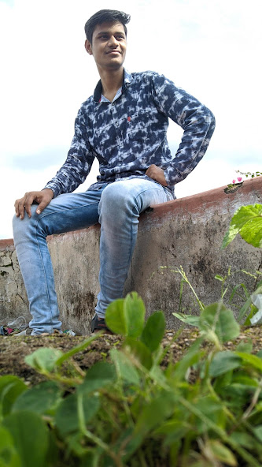
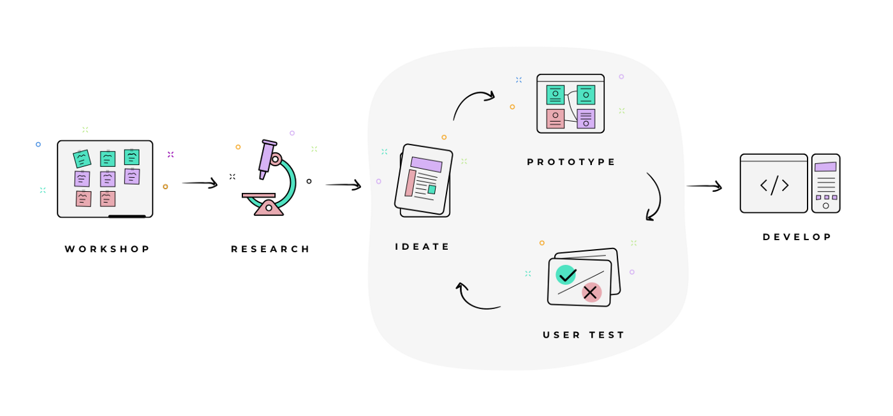

I am focusing on AI and Content, exploring Marketing & Distribution, Geopolitics and Economics.
Location: Betul, Madhya Pradesh, India
Email: pawarmp102@gmail.com
Website: monk102.github.io
During the pandemic, I managed and built a gaming community on YouTube with over 490K Subscribers!
Currently scaling multiple social media accounts including YAAS (0 to 15K+ followers), Beyond 5000 (50K to 150K+ followers), and managing content for Builders Central and Hackonomics.
Tech-Savvy Professional | Tech & Content Management | Problem-Solver
I’m passionate about leveraging technology and creativity to enhance efficiency and impact.
I am constantly learning various skills, such as AI, marketing, code, and finance, and I share my learning on social media!

Modern, responsive websites to represent your brand or portfolio. From landing pages to full web apps, I use the latest technologies to deliver a great user experience.
Professional editing for YouTube, Instagram, and more. I can help with thumbnails, SEO, and content strategy to grow your audience.
Grow your online presence with content marketing, social posts, and targeted campaigns. I specialize in audience engagement and brand building.
Need a professional resume or want your current one reviewed? I can help you stand out to recruiters and land your next opportunity.

Built and managed a gaming community with over 450K+ Subscribers and 112M+ views.
Responsible for video editing, thumbnails, SEO, and channel growth strategy.
Collaborated on live streams and community engagement.
Designed and developed this personal portfolio website to showcase my work and achievements.
View Website

Scaled this IP from 0 to 15K+ followers on Instagram through strategic content creation and community engagement.
View Instagram View YouTubeCreated, edited, and uploaded content on history, culture, and more, growing the channel from 50K to 150K+ followers.
View YouTube

Managed content creation and growth for Hackonomics across YouTube and Instagram platforms.
View YouTube View InstagramWritten, edited, and uploaded content on history, culture, etc., achieving significant growth from 50K to 150K+ followers.
View Instagram

Started this gaming YouTube channel during COVID with my younger brother, growing it to more than 490K+ subscribers and 125 million+ views.
View YouTube View InstagramIndore, Madhya Pradesh, India (Remote)
Created growth from 50K to 120K+, millions of views across Instagram and YouTube. Edited reels, shorts, and long-form content.
Marketing Management, Drafting Emails, Web Scrapping, Reaching out to Influencers, Project Management.
Managed multiple social media accounts, scaled YAAS from 0 to 15K+ followers, grew Beyond 5000 to 150K+ followers, and handled content creation for Builders Central and Hackonomics.
Achieved massive growth with over 490K Subscribers and 125 million+ views! Started this gaming YouTube channel during COVID with my younger brother.
Hosted sessions on learning new skills, technology, personal finance, cryptocurrency, and more.
Active member, learned about content creation, Web Development, Blockchain, Web3.
Check out my technical blog where I write about AI, technology, and more.
De-dollarization, the process of reducing the U.S. dollar's dominance in international trade and finance, is expected to significantly reshape global.
India and China's historical economic dominance can be attributed to a combination of geographical advantages and economic activities, according to the sources.
Blockchains are distributed, immutable ledgers of transactions across a peer-to-peer network — dive into our blockchain guides, whitepapers and more.